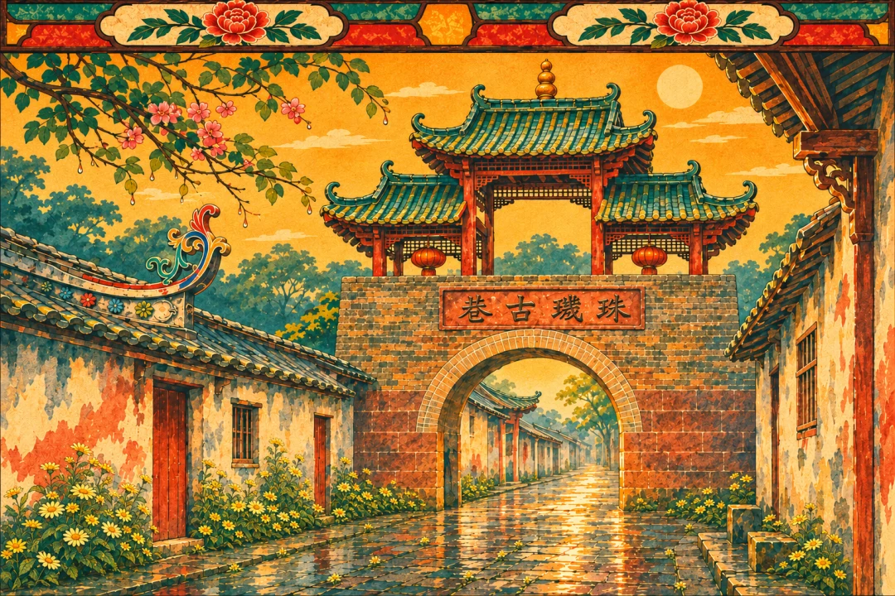
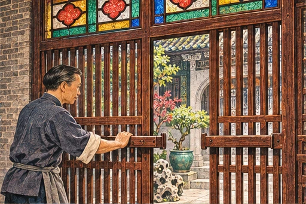
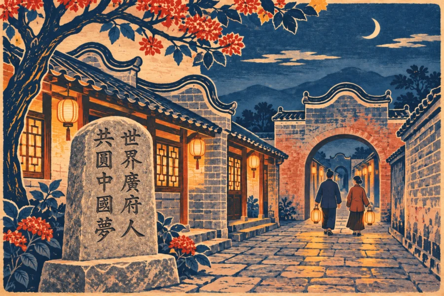

2013 · 广州
首届大会，有来自 39 个国家和地区的广府社团代表参加。
广东省侨联 · 首届大会在广州召开珠玑巷是中华民族开拓岭南的中转地
广州日报 · 广州市人民政府门户网站转载 · 2023-04-26
也是数千万广府人及众多海外华侨的发祥地
「得闲返嚟食饭。」在广州，在香港，也在悉尼，这句「有空回来吃饭」，总让人想起一个给自己留座位的人。
说起「世界广府人」，说的是家族或文化根脉与广州及珠江三角洲广府地区相连、如今生活在世界各地的人。有的人从小讲粤语，有的人在海外长大，先记住的是阿婆叫自己的乳名，或家里过年一定会做的那道菜。大家来参加的这场聚会，全称是「世界广府人恳亲大会」，简称「世广会」。
认识广府文化
「恳亲」二字，说起来很亲切，就是来见见乡亲。长辈带来老照片，请人认一认故乡的街口；年轻人问起照片背后的地名，第一次听懂家里讲了多年的故事。这样的相认，正是大会想留给下一代的东西。
2013 年，首届世界广府人恳亲大会在广州举行。来自 39 个国家和地区的三千多名嘉宾参会，广府社团也借此建立长期交流与合作的平台。

广府文化与珠江三角洲的城市和水乡联系紧密，以粤语、粤剧、饮茶和民间节庆等日常传统为人熟悉。随着乡亲迁居港澳、东南亚、澳洲和其他地区，这些传统在新的社区里延续，也长出新的表达。
对不少家庭而言，珠玑巷是寻访家族来路的重要一站。今天，海外社团也通过族谱交流、演出和社区活动，把这些记忆传给下一代。

在韶关南雄，珠玑古巷承载着广府家族南迁的记忆。第五届大会把开幕主会场设在古巷百姓堂广场，将家宴、寻根和乡亲联谊带回这段迁徙历史的现场。
首届大会，有来自 39 个国家和地区的广府社团代表参加。
广东省侨联 · 首届大会在广州召开第二届大会汇聚来自 53 个国家和地区的乡亲。
新西兰广府社团 · 广府人历史（社团自述）12 月 2 日至 4 日举行。据社团记录，参会嘉宾超过 2,500 人。
第三届大会走进侨乡江门，与当地侨务、文化交流活动相连。
新西兰广府社团 · 广府人历史（社团自述）11 月 17 日开幕，与中国侨都（江门）华人嘉年华同期举行，并设广府文化活动与珠玑寻根项目。
第四届大会在肇庆举行，千余名广府乡亲共叙乡情。
金羊网 · 第四届大会在肇庆举行11 月 17 日开幕。会上发布支持粤港澳大湾区高质量发展的肇庆倡议。
第五届大会开幕，会旗交给下一届主办城市悉尼。
广东省侨办 · 韶关大会开幕与会旗交接（网页存档）11 月 24 日至 26 日在南雄举行。珠玑古巷寻根、地方投资推介与会旗交接是这一届的历史看点。
第六届大会计划于 10 月举行，首次在海外举办。
今日悉尼 · 6 月 13 日悉尼筹备发布会历届大会曾评选世界广府人「十大杰出人物」和「十大杰出青年」，合称「双十杰」。江门、肇庆和韶关的报道记录了这项传统，获表彰者来自文化传承、科技创新、社会公益等不同领域。